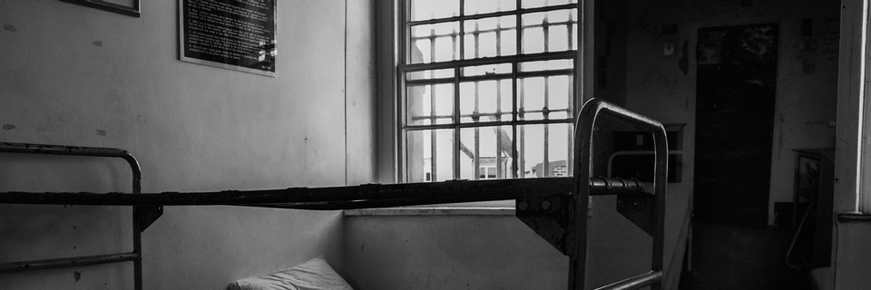

Introducción
La convivencia pacífica, es un pilar fundamental para tejer relaciones sólidas y construir comunidad, promover un conjunto de valores, principios y normas de convivencia para una vida en sociedad. Comprender que estos principios son deberes que enaltecen la dignidad humana es el primer paso para asumirlos como los lineamientos de los comportamientos cotidianos y la base de la forma como nos relacionamos y construimos comunidades pacíficas. (Cartilla convivencia y derechos humanos)
Las consultorías filosóficas permiten aprender el arte de oír y comprender una filosofía profunda, abarcando el saber de los demás como el de nosotros mismos; a partir de estas se pretende escuchar a los niños, niñas y adolescentes que han crecido en situaciones difíciles o entornos marginados por la sociedad, puesto que es de suma importancia el atender y reflexionar sobre sus vivencias enfocándonos en lo que parece estar oculto y olvidado en nuestro entorno.
Se hace evidente la necesidad de salvaguardar los derechos de todos los niños, niñas y jóvenes; como ejemplo de esto podemos hacer referencia a las instituciones que integran el Sistema Nacional de Bienestar Familiar (hogares de paso en modalidad de casa hogar) que tienen como objetivo la restitución de los derechos vulnerados de la población que se encuentra allí y es por esto que se hace imperante dicho enfoque en el momento de hacer cualquier tipo de acompañamiento en estos sectores. Teniendo en cuenta que las problemáticas que envuelven este tipo de instituciones inciden de manera contundente en el desarrollo óptimo y eficaz de la convivencia de los individuos allí presentes, se debe tener en cuenta que es un aspecto que requiere de total atención, ya que desarrollar una sana convivencia es una de las maneras de formar niños, niñas y jóvenes para un ejercicio pleno de la ciudadanía que parta del reconocimiento de la dignidad inherente a todo ser humano, puesto que éste busca vivir como quiera, es decir que pretende desarrollarse desde el concepto de dignidad: 1) entendida como la autonomía o la posibilidad de diseñar un plan de vida propio, 2) vivir bien, tener ciertas condiciones materiales y sociales de existencia, 3) vivir sin humillaciones, poder tener integridad física y moral; atendiendo a lo anterior, suscita la necesidad de proponer un mecanismo adicional a los ya establecidos por dichas instituciones para fortalecer los procesos de acompañamiento.
Considerando que el desarrollo del proyecto tiene como enfoque la convivencia en los hogares de paso, se hace importante conocer las diversas problemáticas identificadas por la institución (ICBF) encargada de estos espacios, esto con el fin de poder implementar la práctica filosófica como un mecanismo que le permita a dicha población desarrollar un pensamiento reflexivo y a partir de ello potencializar su interacción con el entorno de manera significativa y a su vez contribuir en aminorar las problemáticas ya reconocidas por dichas instituciones.
Definición y Objetivos

Definición Hogar de Paso:
Es el servicio mediante el cual una familia o persona natural o jurídica, previamente seleccionada por las autoridades territoriales o indígenas correspondientes y contando con la aprobación por parte del Instituto Colombiano de Bienestar Familiar, brinda de manera voluntaria y subsidiada por el Estado, en forma inmediata y provisional, protección integral para restituir y garantizar a los niños, niñas y adolescentes sus derechos[4] cuando han sido amenazados o vulnerados.
Objetivos de los hogares de paso:
· Brindar protección integral a niños, niñas y adolescentes mientras se adelantan las diligencias pertinentes para tomar otras medidas de restablecimiento de derechos.
· Realizar una evaluación inicial sobre las condiciones personales, familiares y sociales con el fin de obtener los elementos de juicio que le permitan a la autoridad competente determinar el curso del trámite administrativo
· Propiciar espacios de socialización, reflexión y sensibilización frente a la propia situación y circunstancias de vida.
Fuente: Archivo interno Instituto Colombiano de Bienestar Familiar, 02-12-2008
Problemática
Planteamiento del problema
El programa de protección que brinda el ICBF en sus diferentes modalidades con operadores tradicionales, enfocados a los niños, niñas y jóvenes vulnerables, tiene como objetivo la reinserción de esta población a la vida cotidiana proporcionándoles herramientas y espacios en los cuales puedan desarrollarse ante todo como seres humanos integrales.
Entendiendo que dicha entidad busca salvaguardar los derechos de los niños, niñas y jóvenes, se establece que su enfoque principal es que estos no sean vulnerados, pero no existe un acercamiento que abarque los componentes de una filosofía práctica que puede ayudar o incentivar a un libre pensamiento.
En consecuencia al no acompañamiento filosófico que tienen los niños, niñas y jóvenes que están en hogares de paso (ICBF), se hace evidente la necesidad de brindarles espacios de pensamiento libre, con el fin de escuchar sus ideas, conocer sus puntos de vistas y generar un cambio de pensamiento a través de la filosofía.
Consultoría Filosófica
En 1981, Gerd Achenbach, filosofo de formación abrió un gabinete oficial de consulta filosófica en el que se recibía a alguien que el llamaba “un invitado” una persona que desea entablar un dialogo filosófico sobre un tema o un problema que le preocupa. El cual le permita esclarecer o resolver dicho problema, con una diferencia teórica: la marca comercial de la filosofía consiste en trabajar el pensamiento y la existencia mediante la racionalidad, la lógica u otros instrumentos del pensamiento crítico. Es decir, la filosofía proporciona como instrumentos para salir de un “yo” reductor y constituirse como un ser singular. la filosofía es una especie de «maestra de la vida», que mediante la entrevista que mantiene con su «invitado», añade profundidad a su discurso, le ayuda a clarificar las problemáticas de su existencia al proponerle diversas interpretaciones de sus palabras y de los momentos de la vida que evoca.
Prácticas filosóficas
en medios difíciles
La filosofía bajo su aspecto formal, es decir en aulas de una academia, a dejado excluida a muchas personas, que no han tenido posibilidad de acercamiento, en estas personas se puede encontrar un pensamiento diferente y autónomo para el mejor desarrollo de la filosofía, por ende se ocupa de: los adolescentes en situación de ruptura y de abandono escolar, los centros de trabajo para los minusválidos, los centros de acogida para los que no tienen un domicilio fijo, las prisiones, los centros de alfabetización, las asociaciones de personas que tienen dificultades de orden social, psicológico o físico, los hospitales, los campos de refugiados, etc.
referencias bibliográficas
-Cortes Márquez, M. M., & Payares, R. M. (2009). Familia y espacios de relación para jóvenes que viven en un hogar de paso .
-Gutiérrez Agudelo, E. L., & Arroyave Gaviria, N. E. (2019-2020). Proyecto y Propuesta de Intervención Hogares de Paso Cajas de Herramientas (Familia, Grupo y Comunidad) . Medellin: Tecnologico de Antioquia.
Social, M. d. (2020). Salud mental, uno de los principales retos de la pandemia. Ministerio de Salud y Protección Social, 2.
-MAGALLÓN, O. V. (2019). DISTINCIONES BÁSICAS Y ESPECIFICIDAD DE LA CONSULTORÍA FILOSÓFICA EN RELACIÓN A LAS PSICOTERAPIAS. HASER. Revista Internacional de Filosofía Aplicada, 65-91.
-Social, M. d. (2020). Salud mental, uno de los principales retos de la pandemia. Ministerio de Salud y Protección Social, 2.
Contacto